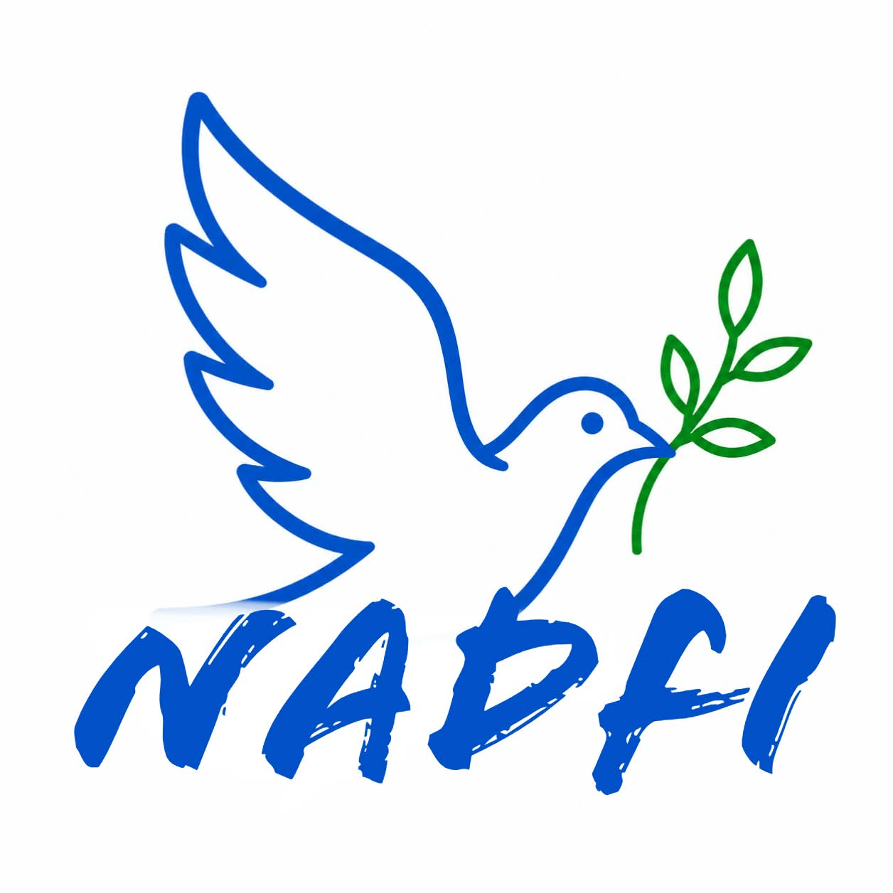

This project allows people to spread awareness and commit their daily goals as a small step towards the care for the nature. This does not only contain caring for nature but to maintain peace and harmony among humans and nature leading to true self development of nations along withe attention to nature and wildlife. FOLLOWING ARE THE IDEAS TO PERFORM IT...
STEP 1: keep the surrounding nature in check.
STEP 2: spread awareness.
STEP 3: make a small team and encourage people.
STEP 4: feed atleast one animal per day or week. If not, atleast keep them in protection.
STEP 5: raise concerns regarding the pollution in nearby waterbodies and land.
STEP 6: inform the government about any illegal activity regarded to nature.